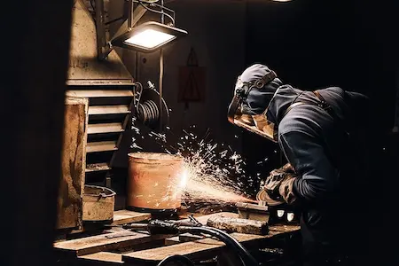

Conocé nuestros servicios
¿Ya conocés las últimas adiciones en nuestros servicios? Desde ForjaOeste siempre estamos en búsqueda de expansión y mejora en la calidad de atención de nuestros clientes.
Leer más
¿Ya conocés las últimas adiciones en nuestros servicios? Desde ForjaOeste siempre estamos en búsqueda de expansión y mejora en la calidad de atención de nuestros clientes.
Leer más
Al momento de trabajar en procesos de soldadura, es importante tener en cuenta las medidas necesarias para operar de una forma segura. Este artículo de la UNLP desarrolla el tema.
Leer más Este artículo de la UTN nos brinda un panorama general y muy bien fundamentado de los distintos procesos utilizados para soldar.
Leer másLa soldadura fue uno de los procesos claves de la historia del desarrollo tecnológico de la humanidad. El siguiente artículo recorre cronológicamente los sucesos que marcaron su evolución.
Leer másSin duda uno de los elementos más vitales a la hora de soldar: la máscara. Este artículo de la empresa RMB explica las distintas variedades existentes, su funcionamiento, correcta utilización y selección.
Leer másUno de los temas más consultados al momento de trabajar con soldadura por arco es el referido a la elección de los polos para el electrodo y la pieza. Este artículo explica las características de cada configuración.
Leer más